Site-wide V3 shell
Actual local routes. Cloud-disabled empty states are intentional. Populated social contract captures are in the social regression gallery.
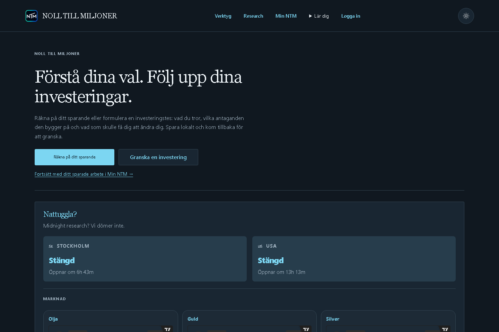
index-1440-dark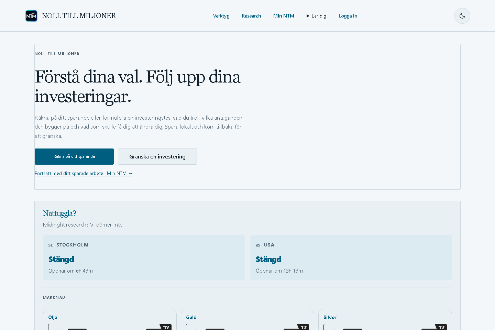
index-1440-light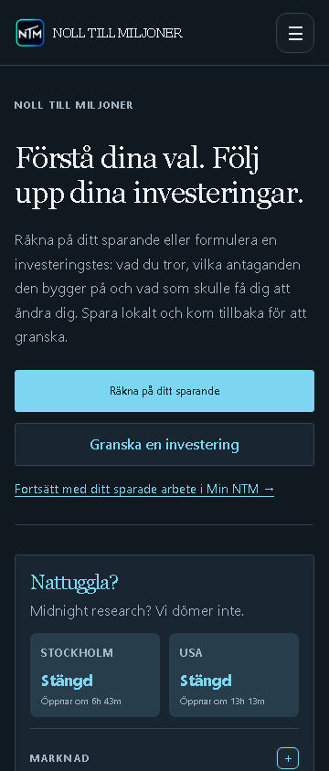
index-360-dark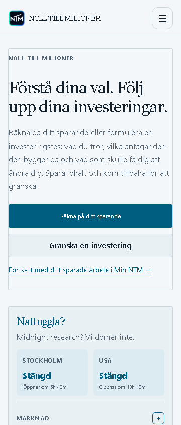
index-360-light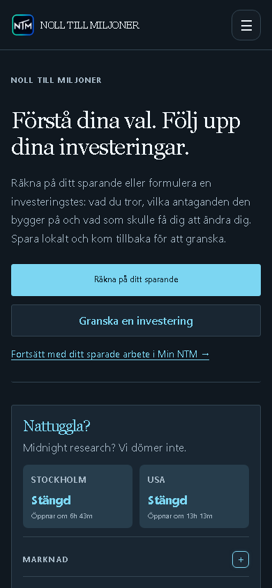
index-390-dark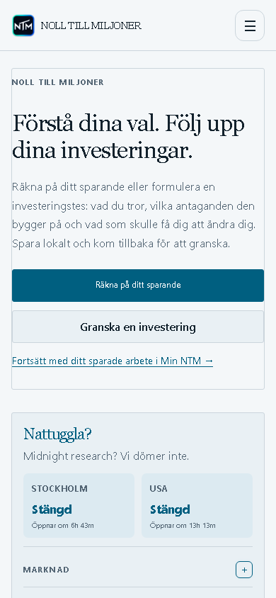
index-390-light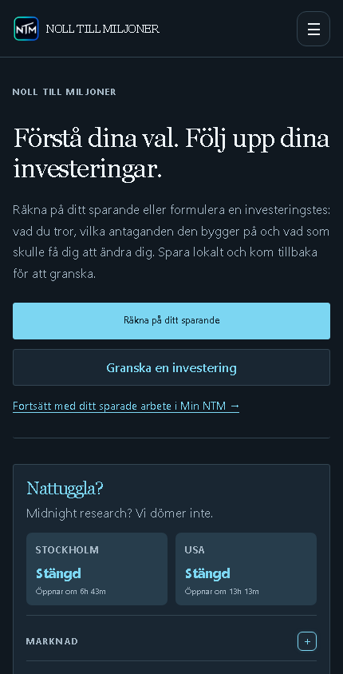
index-430-dark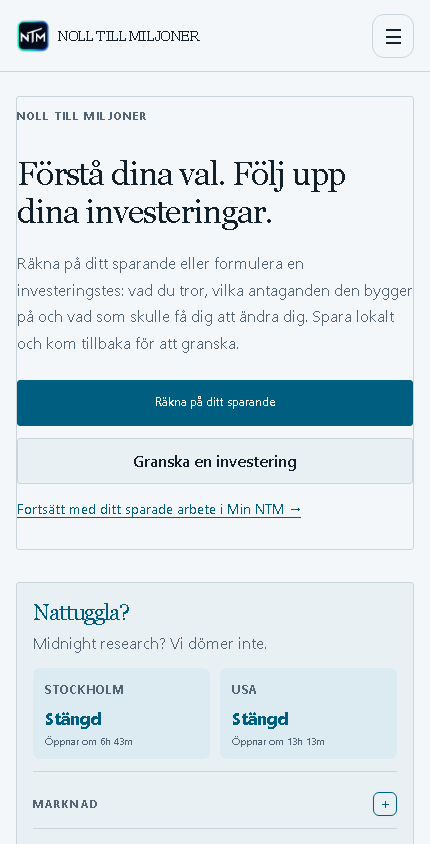
index-430-light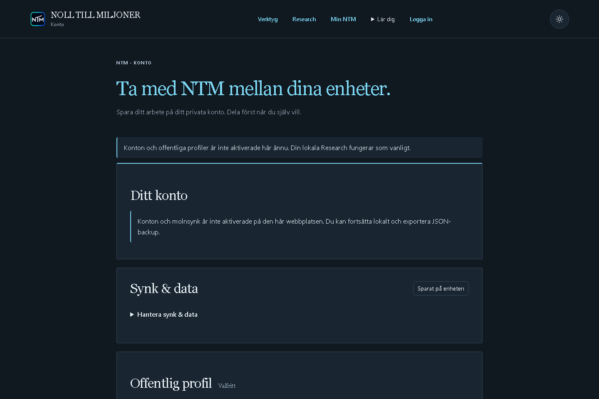
konto-1440-dark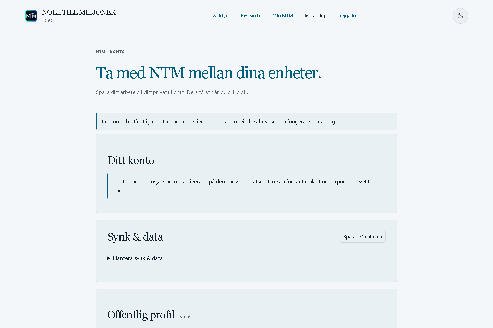
konto-1440-light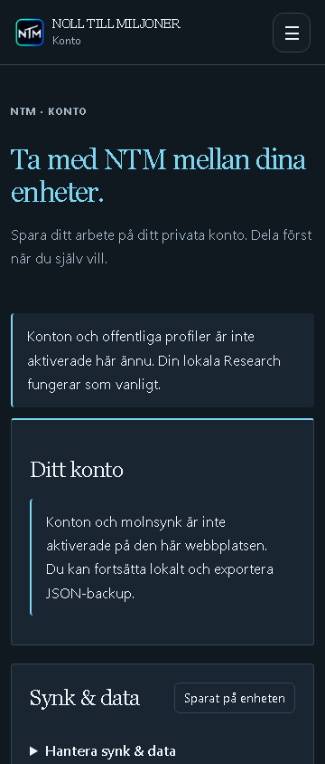
konto-360-dark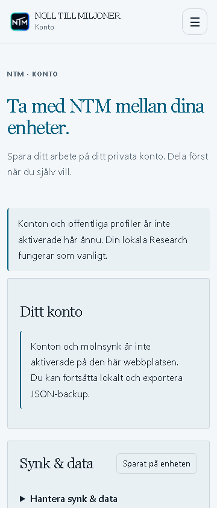
konto-360-light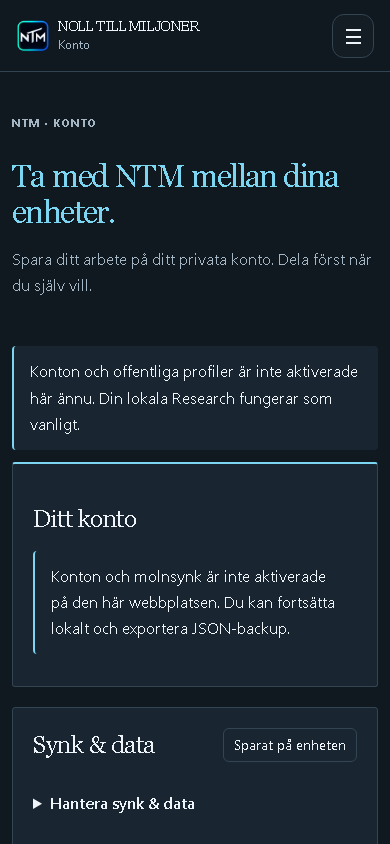
konto-390-dark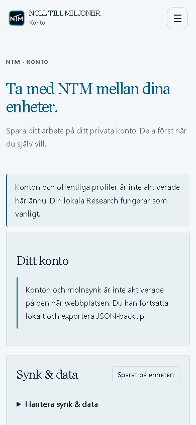
konto-390-light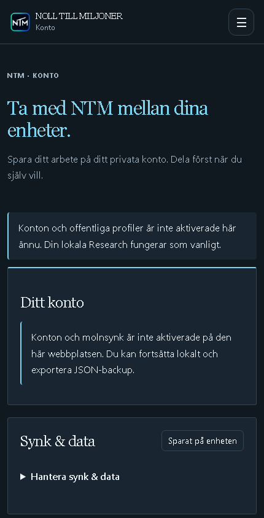
konto-430-dark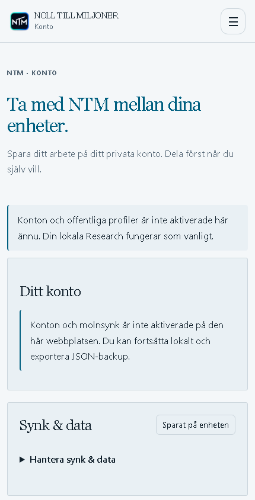
konto-430-light research-1440-dark
research-1440-dark research-1440-light
research-1440-light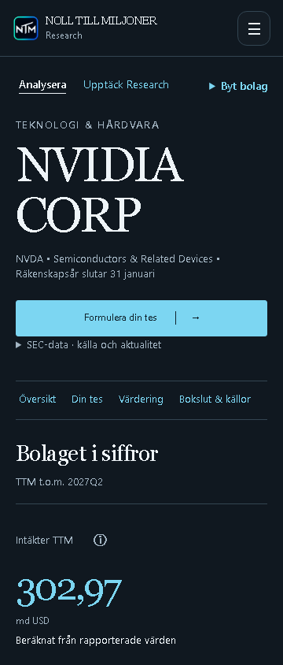
research-360-dark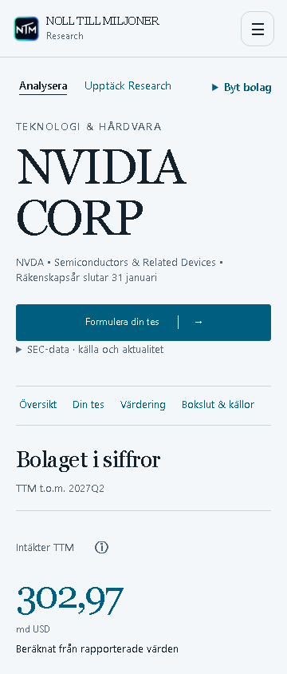
research-360-light research-390-dark
research-390-dark research-390-light
research-390-light research-430-dark
research-430-dark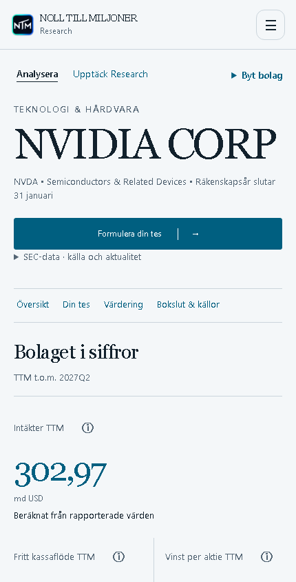
research-430-light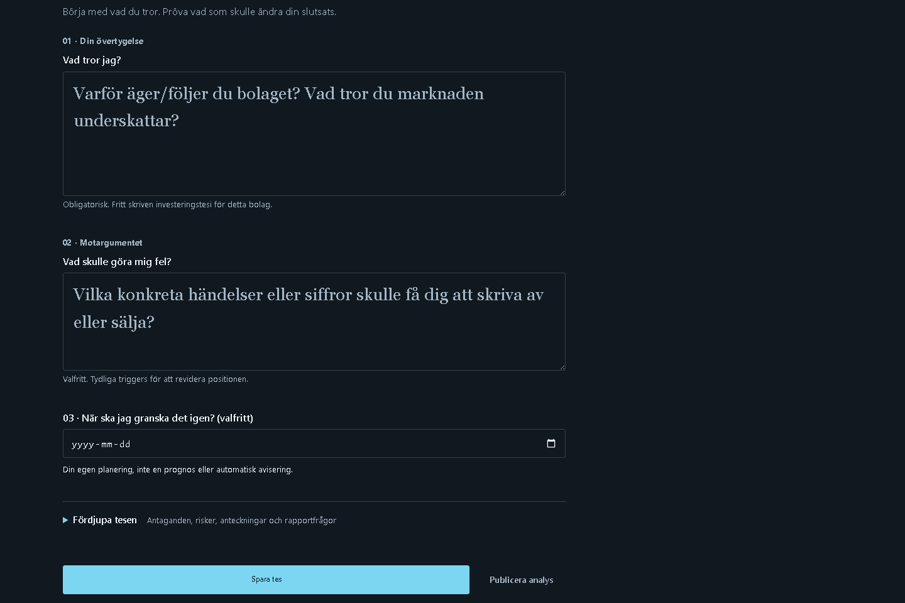
thesis-research-1440-dark thesis-research-1440-light
thesis-research-1440-light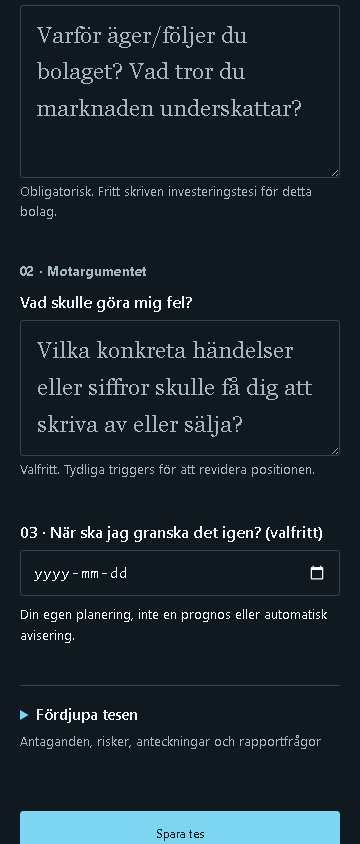
thesis-research-360-dark thesis-research-360-light
thesis-research-360-light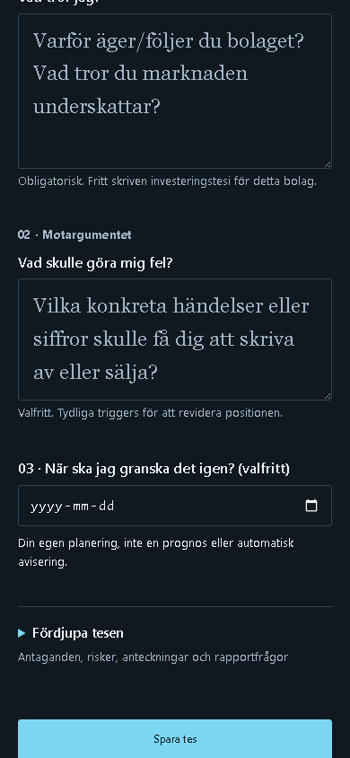
thesis-research-390-dark thesis-research-390-light
thesis-research-390-light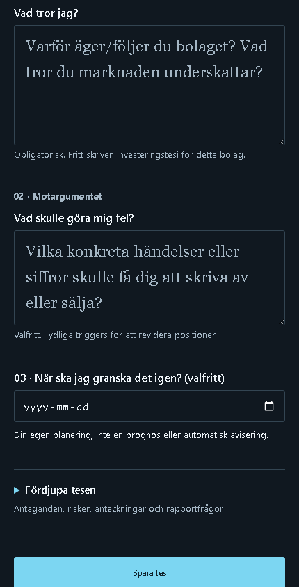
thesis-research-430-dark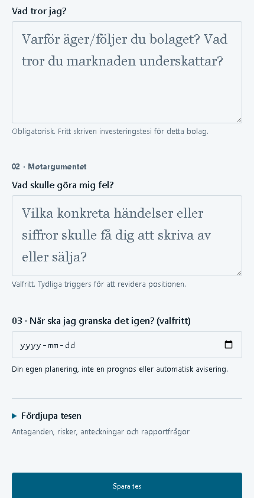
thesis-research-430-light